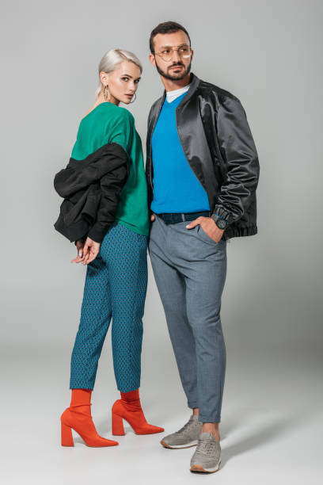
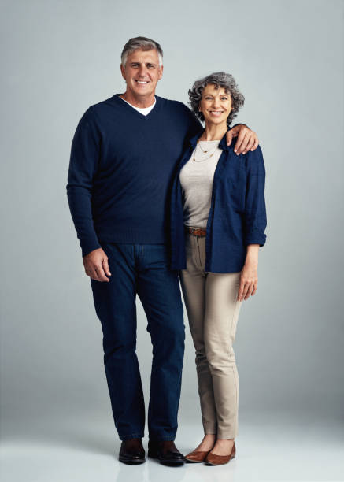
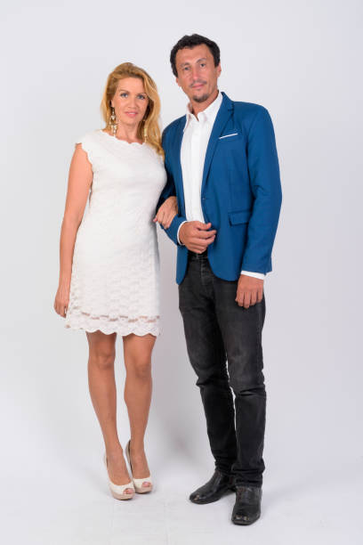

- 
- 
- 
La asesoría de imagen consiste en la remodelación del aspecto y, para ello, yo cumplo varias funciones: Evaluar la imagen de la persona y analizar su morfología facial y corporal para saber qué prendas son las más adecuadas a su cuerpo. Identificar el estilo y considerar las preferencias personales.
Los clientes suelen acudir a mí en un momento de su vida determinado, cuando quieren ayuda o consejo sobre su imagen. Por ejemplo, es posible que deseen crear una buena impresión con el fin de conseguir un nuevo trabajo o ganar un ascenso, quizá acuden al consultor antes de casarse o porque quieren encontrar una nueva pareja, o cuando han perdido peso y no saben qué ropa usar.
Algunas empresas me contratan para mejorar la imagen de su negocio, por ejemplo, ayudando a crear un nuevo código de vestir de los trabajadores que refleje la marca de la empresa, o enseñando al personal cómo pueden mejorar sus habilidades de comunicación en reuniones de negocios.
El asesoramiento culmina con un detallado informe sobre los tipos de maquillaje adecuados y los peinados y cortes de pelo que acentuarán las virtudes del rostro.